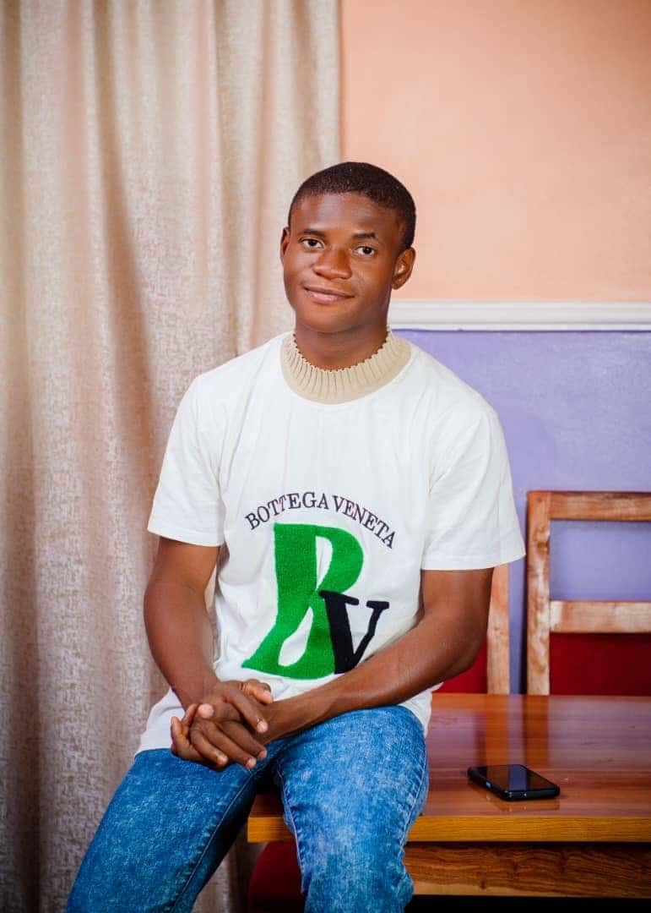

Orji Emmanuel Chinenyenwa | WDD 130
Hello! my name is Orji Emmanuel, I am from the eastern part of Nigeria. I am a very methodical person and also detail oriented in my actions. I love writing codes to improve my skills and in being creative.
Hello! my name is Orji Emmanuel, I am from the eastern part of Nigeria. I am a very methodical person and also detail oriented in my actions. I love writing codes to improve my skills and in being creative.